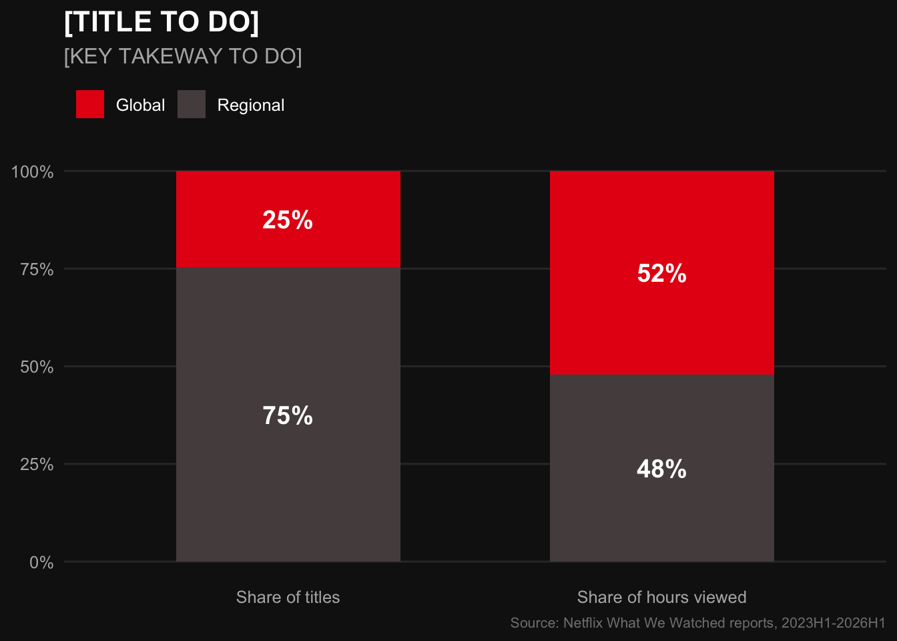
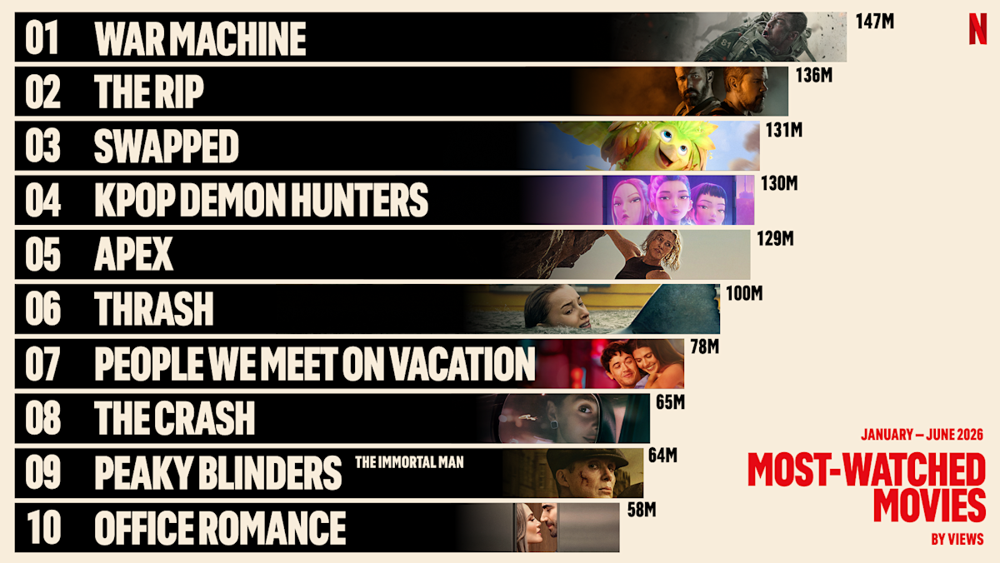
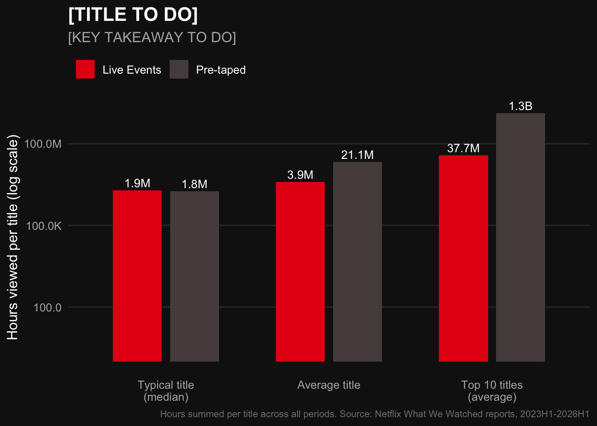

STA 9750 Mini-Project #01: What We Watched: Exploring Netflix Viewing Data
Last Updated: Friday October 09, 2026 at 04:34 PM

Sources
- Netflix logo © Netflix, Inc. Image retrieved from You Wiki (Fandom).
- Netflix (2026). What We Watched the First Half of 2026. Netflix Newsroom. Image retrieved from about.netflix.com.
Strategy Memo
- Recommendation summary (2-3 sentences)
- Global originals + licensed base (global vs. licensed): 24.6% of titles → 52.1% of viewing; staples are mostly licensed
- Live events as a complement (big hits vs. long tail): typical live ≈ typical pre-taped; no blockbusters; value through simultaneous audiences

- Limitations (hours favor long content; 2023H1 gaps, revenues streams missing)
What is the Netflix What We Watched Report?
- Netflix What We Watched Reports - published every 6 months starting in 2023
- The “WWW” reports aggregate total global viewership for almost the entire Netflix catalog over six months periods
- The data is acquired to analyze viewership to make strategic decisions on the 2027 budget
1/ Data Ingest and Cleaning
Goal: load the data and transform it to make it efficiently usable for analysis.
After importing the data:
- we rename columns in the data set to get valid
Rvariable names, aligned on the same format (e.g. all lower case, multi-word separated by underscores) - we change variable types when appropriate, to ensure that
Rwill interpret them as the correct type for future arithmetic manipulation (e.g.yearfromchrtoint) - we filter out the “Other Shows” entries from the 2025H2 and 2026H1 reports. Netflix changed the report by aggregating many shows together under one bucket, thus not representing a single one. This would cause a distortion in title rankings and comparisons across years/periods.
Code
#' Acquire Netflix What We Watched Reports
#'
#' This function will acquire and standardize all data for MP#01
#' from Netflix. Because Netflix hosts the data files behind a CDN, we
#' are accessing the release pages and automatically extracting links to the
#' relevant files (with CDN hash).
#'
#' After import, files are stacked vertically and some basic cleaning is
#' performed.
load_netflix_data <- function(){
# Note to students: Make sure you have installed the tidyverse and fs packages
# before beginning this assignment. If you aren't sure,
# simply run `library(tidyverse)` at your R Console and, if
# you don't see an error message, `tidyverse` has been
# installed. (Same for `fs`) If you still need to install
# either package, use the `install.packages` function as
# demonstrated in class.
library(tidyverse)
library(rvest)
library(readxl)
library(fs)
data_dir <- path("data", "mp01")
if(!dir_exists(data_dir)){
dir_create(data_dir, showWarnings=FALSE, recurse=TRUE)
}
NETFLIX_URLS <- list(
`2023H1` = "https://about.netflix.com/news/what-we-watched-a-netflix-engagement-report",
`2023H2` = "https://about.netflix.com/news/what-we-watched-the-second-half-of-2023",
`2024H1` = "https://about.netflix.com/news/what-we-watched-the-first-half-of-2024",
`2024H2` = "https://about.netflix.com/news/what-we-watched-the-second-half-of-2024",
`2025H1` = "https://about.netflix.com/news/what-we-watched-the-first-half-of-2025",
`2025H2` = "https://about.netflix.com/news/what-we-watched-the-second-half-of-2025",
`2026H1` = "https://about.netflix.com/news/what-we-watched-the-first-half-of-2026"
)
download_if_needed <- function(url, local){
if(!file_exists(local)){
download.file(url, local, quiet = TRUE, mode = "wb")
}
return(local)
}
NETFLIX_URLS |>
map(read_html) |>
map(html_element, xpath = "//a[contains(@href, '.xlsx')]") |>
map_chr(html_attr, "href") |>
enframe("period", "url") |>
mutate(path = path(data_dir, paste0(period, ".xlsx")),
path = map2(url, path, download_if_needed),
data = map(path, read_excel, skip=3, na="*"),
data = map(data, \(x) x |> mutate(`Release Date` = as.Date(`Release Date`)))) |>
unnest(data) |>
select(-url, -path) |>
mutate(year=str_sub(period, 1, 4),
half=str_sub(period, start=6),
period_start = make_date(year, if_else(half==1, 1, 7), 1),
period_end = make_date(year, if_else(half==1, 6, 12), if_else(half==1, 30, 31))) |>
filter(!is.na(`Hours Viewed`)) |>
mutate(live_event = !is.na(Runtime) & str_detect(Runtime, "\\d+:\\d+\\*"),
clean_time = str_remove(Runtime, fixed("*")),
Runtime = 60 * hour(hm(clean_time)) + minute(hm(clean_time))) |>
select(-clean_time) |>
mutate(Runtime = coalesce(Runtime, mean(Runtime, na.rm=TRUE)),
.by=Title,
Title = stringi::stri_trans_general(Title, "Latin-ASCII"),
Title = str_remove(Title, " // .*"),
Title = str_remove(Title, "[^[:ascii:]].*"),
Title = str_trim(Title)) |>
filter_out(Title == "") |>
select(year,
period,
period_start,
period_end,
Title,
-half,
Runtime,
Views,
`Hours Viewed`,
`Release Date`,
`Available Globally?`,
live_event) |>
rename(title = Title,
runtime = Runtime,
views = Views,
hours_viewed = `Hours Viewed`,
release_date = `Release Date`,
available_globally = `Available Globally?`) |>
mutate(year = as.integer(year),
available_globally = available_globally == "Yes") |>
filter_out(title == "Other Shows")
}
NETFLIX_DATA <- load_netflix_data()2/ Initial Data Exploration
After an initial survey of our data,
glimpse(NETFLIX_DATA)Rows: 61,890
Columns: 11
$ year <int> 2023, 2023, 2023, 2023, 2023, 2023, 2023, 2023, 202…
$ period <chr> "2023H1", "2023H1", "2023H1", "2023H1", "2023H1", "…
$ period_start <date> 2023-01-01, 2023-01-01, 2023-01-01, 2023-01-01, 20…
$ period_end <date> 2023-06-30, 2023-06-30, 2023-06-30, 2023-06-30, 20…
$ title <chr> "The Night Agent: Season 1", "Ginny & Georgia: Seas…
$ runtime <dbl> 491, 587, 856, 409, 389, 497, 2703, 533, 548, 428, …
$ views <dbl> NA, NA, NA, NA, NA, NA, NA, NA, NA, NA, NA, NA, NA,…
$ hours_viewed <dbl> 812100000, 665100000, 622800000, 507700000, 5030000…
$ release_date <date> 2023-03-23, 2023-01-05, 2022-12-30, 2022-11-23, 20…
$ available_globally <lgl> TRUE, TRUE, TRUE, TRUE, TRUE, TRUE, FALSE, TRUE, TR…
$ live_event <lgl> FALSE, FALSE, FALSE, FALSE, FALSE, FALSE, FALSE, FA…we note that the data is a mix of numeric, categorical, date, and logical variables. It’s composed of 61,890 rows and 11 columns.
We also note that some columns like views appear to contain NA values, potentially limiting the analyses that rely on this column.
Finally, we can get an idea of what one row represents: one title in one period. It’s worth noting that titles can repeat across periods.
We now take another look at the data, focusing now more on the statistical information,
skim(NETFLIX_DATA)| Name | NETFLIX_DATA |
| Number of rows | 61890 |
| Number of columns | 11 |
| _______________________ | |
| Column type frequency: | |
| character | 2 |
| Date | 3 |
| logical | 2 |
| numeric | 4 |
| ________________________ | |
| Group variables | None |
Variable type: character
| skim_variable | n_missing | complete_rate | min | max | empty | n_unique | whitespace |
|---|---|---|---|---|---|---|---|
| period | 0 | 1 | 6 | 6 | 0 | 7 | 0 |
| title | 0 | 1 | 1 | 217 | 0 | 24426 | 0 |
Variable type: Date
| skim_variable | n_missing | complete_rate | min | max | median | n_unique |
|---|---|---|---|---|---|---|
| period_start | 0 | 1.00 | 2023-01-01 | 2026-01-01 | 2024-01-01 | 7 |
| period_end | 0 | 1.00 | 2023-06-30 | 2026-06-30 | 2024-06-30 | 7 |
| release_date | 35249 | 0.43 | 2010-04-01 | 2026-06-29 | 2021-06-17 | 2487 |
Variable type: logical
| skim_variable | n_missing | complete_rate | mean | count |
|---|---|---|---|---|
| available_globally | 0 | 1 | 0.35 | FAL: 40171, TRU: 21719 |
| live_event | 0 | 1 | 0.01 | FAL: 61580, TRU: 310 |
Variable type: numeric
| skim_variable | n_missing | complete_rate | mean | sd | p0 | p25 | p50 | p75 | p100 | hist |
|---|---|---|---|---|---|---|---|---|---|---|
| year | 0 | 1.00 | 2024.11 | 1.08 | 2023 | 2023 | 2024 | 2025 | 2026 | ▇▅▁▅▂ |
| runtime | 13083 | 0.79 | 467.35 | 694.71 | 2 | 210 | 320 | 545 | 23853 | ▇▁▁▁▁ |
| views | 18196 | 0.71 | 1375241.45 | 3630933.22 | 100000 | 100000 | 400000 | 1200000 | 144800000 | ▇▁▁▁▁ |
| hours_viewed | 0 | 1.00 | 8243246.08 | 24603581.87 | 100000 | 500000 | 1800000 | 6400000 | 964100000 | ▇▁▁▁▁ |
we see that the data set seems to be relatively complete, with few missing values across variable types, except for numeric runtime, views and date release_date where the complete_rate is near below 80%.
The mean for hours_viewed is 8.2M and the median is 1.8M, where the mean is about 4.6x the median. We note a heavily skewed distribution, indicating that some titles may be very popular compared to others.
Note: we include a table to see which top titles in what period could explain the skewed distribution.
Code
NETFLIX_DATA |>
slice_max(hours_viewed, n = 5) |>
select(title, period, hours_viewed) |>
gt() |>
tab_header(title = "The 5 Netflix Titles with the Most Hours Viewed",
subtitle = "The biggest hits in Netflix's WWW reports, starting 2023") |>
cols_label(title = "Title",
period = "Period",
hours_viewed = "Hours Viewed") |>
fmt_number(columns = c(hours_viewed),
suffixing = TRUE, decimals = 1) |>
tab_source_note("Source: Netflix What We Watched reports, 2023H1-2026H1") |>
netflix_theme()| The 5 Netflix Titles with the Most Hours Viewed | ||
| The biggest hits in Netflix's WWW reports, starting 2023 | ||
| Title | Period | Hours Viewed |
|---|---|---|
| Wednesday: Season 2 | 2025H2 | 964.1M |
| Bridgerton: Season 4 | 2026H1 | 889.8M |
| Stranger Things 5 | 2025H2 | 879.7M |
| Squid Game: Season 2 | 2025H1 | 840.3M |
| The Night Agent: Season 1 | 2023H1 | 812.1M |
| Source: Netflix What We Watched reports, 2023H1-2026H1 | ||
The most popular titles are seasons from different shows, indicating that the popularity is broken down by season, and not show overall.
3/ Exploratory Questions
Now that we have looked at the data set structure and gotten an idea of its content, we deep dive into some key representative facts about the WWW reports. This allows us to understand the specific content, and not only the statistical components.
Show calculations
# Q1
date_start <- min(NETFLIX_DATA$period_start)
date_end <- max(NETFLIX_DATA$period_end)
# Q2
n_titles <- n_distinct(NETFLIX_DATA$title)
# Q3
bridgerton_hours <- NETFLIX_DATA |>
filter(str_detect(title, "Bridgerton")) |>
summarize(total = sum(hours_viewed)) |>
pull(total)
# Q4
stranger_things_hours <- NETFLIX_DATA |>
filter(str_detect(title, "Stranger Things")) |>
filter_out(str_detect(title, "Beyond")) |>
filter_out(str_detect(title, "Tales")) |>
filter_out(str_detect(title, "Fireplace")) |>
summarize(total = sum(hours_viewed)) |>
pull(total)
# Q5
top10_share <- NETFLIX_DATA |>
filter(period == "2026H1") |>
arrange(desc(hours_viewed)) |>
summarize(share = sum(hours_viewed[1:10]) / sum(hours_viewed)) |>
pull(share)
# Q6
available_globally_by_title <- NETFLIX_DATA |>
summarize(global = any(available_globally), .by = title) |>
summarize(share = mean(global)) |>
pull(share)
available_globally_by_hours <- NETFLIX_DATA |>
summarize(share = sum(hours_viewed[available_globally], na.rm = TRUE) /
sum(hours_viewed[!is.na(available_globally)])) |>
pull(share)First, we note that the date ranges from January 01, 2023 to June 30, 2026. The reports thus started in 2023, and are broken down into 6-month periods (with 7 total periods so far).
Besides the total number of entries in the data set, what is interesting is to see how many distinct titles exist. The total number of shows and movies in the data set is 24,426. This is very different from the number of entries, 61,890, confirming that titles may appear several times across periods.
Out of the very popular shows on Netflix, we take a look at the Bridgerton Universe and Stranger Things. While the Bridgerton Universe is broadly viewed with 4.9B total hours, the five seasons of the Stranger Things show accumulate 5.5B total hours. It surpasses the Bridgerton Universe by 14% (a close race).
Another exploration is to see what percentage of the total watch time in the first 6 months of 2026 (2026H1) was spent on the top 10 titles. For 2026H1, 6.2% of watch time was spent on the top 10 titles, out of all 8,186 available titles.
Finally, to get a sense of Netflix’s global reach, we look at what fraction of the catalog is available globally by both title and hours viewed. The share of the Netflix catalog available globally is 24.6% by title, and 52.1% weighted by hours viewed. This could explain that shows available globally are more popular in terms of viewership, even with less availability compared to the whole catalog.
4/ Exploratory Tables
Now we dig deeper into the analysis, by looking at specific aspects of the data set, to compare, evaluate and draw preliminary conclusions. Tables are used to help to visualize the outputs.
The goal is to retrieve the top title (by total hours viewed) in each period, and compare it to total viewership. This helps answer the question: how dominant can a single hit be?
Code
top_by_period <- NETFLIX_DATA |>
mutate(share = hours_viewed / sum(hours_viewed), .by = period) |>
slice_max(hours_viewed, n = 1, by = period, with_ties = FALSE) |>
select(period, title, hours_viewed, share)
top_by_period |>
gt() |>
tab_header(title = "Top Title per Period",
subtitle = "TV shows dominate movies in top titles across each period") |>
cols_label(period = "Period",
title = "Title",
hours_viewed = "Hours Viewed",
share = "Share of Period Viewing") |>
fmt_number(columns = hours_viewed, suffixing = TRUE, decimals = 1) |>
fmt_percent(columns = share, decimals = 1) |>
tab_source_note("Source: Netflix What We Watched reports, 2023H1-2026H1") |>
netflix_theme()| Top Title per Period | |||
| TV shows dominate movies in top titles across each period | |||
| Period | Title | Hours Viewed | Share of Period Viewing |
|---|---|---|---|
| 2023H1 | The Night Agent: Season 1 | 812.1M | 0.9% |
| 2023H2 | King the Land: Limited Series | 630.2M | 1.0% |
| 2024H1 | Bridgerton: Season 3 | 733.8M | 1.1% |
| 2024H2 | Squid Game: Season 2 | 619.9M | 0.9% |
| 2025H1 | Squid Game: Season 2 | 840.3M | 1.2% |
| 2025H2 | Wednesday: Season 2 | 964.1M | 1.4% |
| 2026H1 | Bridgerton: Season 4 | 889.8M | 1.2% |
| Source: Netflix What We Watched reports, 2023H1-2026H1 | |||
Across periods, similar trends are observed: hours viewed range from 619.9M to 964.1M, and the share is relatively the same, from 0.9% to 1.4%. This suggests that, although the top title by hours viewed can be much higher than other shows, the share is relatively small (meaning that the viewership is either spread out across the catalog, or that the catalog choice is very extensive).
Furthermore, as observed in the table, the top titles are TV shows across all periods. This indicates the biggest hits on the platform are recurring popular TV shows (with Bridgerton and Squid Game appearing twice, different seasons).
Now that the top titles have been reviewed, we assess the evolution of available titles and run time across the whole catalog (2023H1-2026H1). Although limited since the reports started in 2023, it matters to see how Netflix evolved across the years and if it impacted the run times.
Code
missing_by_period <- NETFLIX_DATA |>
summarize(missing_runtime = mean(is.na(runtime)),
.by = period)
catalog_by_period <- NETFLIX_DATA |>
summarize(n_titles = n_distinct(title),
total_runtime_minutes = sum(runtime, na.rm = TRUE),
total_runtime_hours = total_runtime_minutes / 60,
.by = period)
catalog_by_period |>
gt() |>
tab_header(title = "Netflix's Catalog Evolution Across Periods",
subtitle = "A steady growth across the catalog, despite a drop in number of titles between 2023H1 and H2") |>
cols_label(period = "Period",
n_titles = "Number of Titles",
total_runtime_minutes = md("Total Run Time (*minutes*)"),
total_runtime_hours = md("Equivalent Total Run Time (*hours*)")) |>
fmt_number(columns = n_titles, decimals = 0) |>
fmt_number(columns = c(total_runtime_minutes, total_runtime_hours), suffixing = TRUE, decimals = 1) |>
tab_footnote(footnote = "Large amount of missing values in the run time of the 2023H1 period.",
locations = cells_body(columns = c(total_runtime_minutes,
total_runtime_hours),
rows = period == "2023H1")) |>
tab_source_note("Source: Netflix What We Watched reports, 2023H1-2026H1") |>
netflix_theme()| Netflix's Catalog Evolution Across Periods | |||
| A steady growth across the catalog, despite a drop in number of titles between 2023H1 and H2 | |||
| Period | Number of Titles | Total Run Time (minutes) | Equivalent Total Run Time (hours) |
|---|---|---|---|
| 2023H1 | 18,126 | 1 2.6M | 1 43.7K |
| 2023H2 | 6,574 | 3.0M | 50.1K |
| 2024H1 | 6,775 | 3.1M | 51.8K |
| 2024H2 | 6,854 | 3.2M | 53.6K |
| 2025H1 | 7,473 | 3.5M | 58.4K |
| 2025H2 | 7,711 | 3.6M | 59.7K |
| 2026H1 | 8,162 | 3.8M | 62.9K |
| 1 Large amount of missing values in the run time of the 2023H1 period. | |||
| Source: Netflix What We Watched reports, 2023H1-2026H1 | |||
2023H1 shows a high number of titles available, with a low total run time value (comparatively to other periods). We note a steep decline in number of titles (by 64%) between 2023H1 and 2023H2. We run a check on missing run time in 2023H1 compared to all other periods. The fraction of missing values reaches 68% for 2023H1, compared to all other periods with at most 1.7%. This confirms that there is a high number of missing run time values, thus explaining the low run time.
Despite the decline, a steady growth appears in the following periods, without any decline across both number of titles and total run time.
Note: titles with less than 50,000 hours of watch time are omitted. Some titles may therefore be missing.
Since the reports started, we wonder which titles have the most consistent high viewership across all periods. This question is particularly interesting, as the titles that will show may likely be ‘staples’, that viewers fall back on over and over. They will likely be present in every period (given that the show was already out starting 2023H1).
Code
n_periods_total <- n_distinct(NETFLIX_DATA$period)
staples <- NETFLIX_DATA |>
summarize(n_periods = n_distinct(period),
avg_hours = mean(hours_viewed),
min_hours = min(hours_viewed),
sd_hours = sd(hours_viewed),
.by = title) |>
filter(n_periods == n_periods_total) |>
mutate(cv = sd_hours / avg_hours) |>
slice_max(min_hours, n = 10) |>
select(title, avg_hours, min_hours, cv)
staples |>
gt() |>
tab_header(title = "Highest Consistent Viewership Across all Periods",
subtitle = md("Consistently high viewership around *old* shows, with high variability around season outings and revivals")) |>
cols_label(title = "Title",
avg_hours = "Avg. Hours per Period",
min_hours = "Lowest Period",
cv = md("Variability (*CV*)")) |>
fmt_number(columns = c(avg_hours, min_hours), suffixing = TRUE, decimals = 1) |>
fmt_percent(columns = cv, decimals = 0) |>
tab_source_note("Titles present across all reporting periods, ranked by lowest period hours. CV = standard deviation / mean.") |>
tab_source_note("Source: Netflix What We Watched reports, 2023H1-2026H1") |>
netflix_theme()| Highest Consistent Viewership Across all Periods | |||
| Consistently high viewership around old shows, with high variability around season outings and revivals | |||
| Title | Avg. Hours per Period | Lowest Period | Variability (CV) |
|---|---|---|---|
| Pablo Escobar, el patron del mal: Season 1 | 136.2M | 105.5M | 17% |
| Chiquititas (2013) | 120.0M | 105.0M | 16% |
| Stranger Things 4 | 207.4M | 97.1M | 83% |
| Suits (2011): Season 1 | 126.9M | 80.9M | 47% |
| Breaking Bad: Season 2 | 91.6M | 78.5M | 13% |
| Suits (2011): Season 2 | 120.3M | 76.1M | 51% |
| Sam & Cat: Season 1 | 91.2M | 75.7M | 15% |
| Breaking Bad: Season 5 | 84.1M | 74.9M | 13% |
| Money Heist: Part 1 | 80.6M | 73.1M | 12% |
| Breaking Bad: Season 3 | 82.0M | 70.9M | 13% |
| Titles present across all reporting periods, ranked by lowest period hours. CV = standard deviation / mean. | |||
| Source: Netflix What We Watched reports, 2023H1-2026H1 | |||
This output suggests that, across all periods, the most reliable titles with the consistent highest viewership are mostly licensed classics, with one Original exception.
We note two different kinds in this table: 7 shows with rather low variability with 30% as a threshold (between 12% and 17%), and 3 shows with high variability (between 47% and 83%). Looking at the titles and with common knowledge, we note a potential explanation around new season releases or digital revival, increasing viewership.
Indeed, when shows have new releases, or digital revivals, it can be assumed that, although viewership is present, the spikes raise their average and variability. The biggest hits center more around new shows, while the most consistent ones are more “older” shows.
What about the share of shows vs. movies? The raw data set doesn’t give that indication. To find the answer, we compute two criteria that will be used for the output:
- Length: anything over ~4 hours is almost certainly a TV show, not a movie
- “Season”: if a title has “Season” or “Limited Series” in it, it is almost certainly a TV show
It is important to note that:
- As previously found, there is a high number of missing values in the run time (especially for 2023H1). We therefore use a criterion to classify titles with missing run time with the keywords only
- The way Netflix names titles is a bit inconsistent in how it represents different seasons of TV shows (e.g. Seinfeld: Season 1 and Seinfeld: Season 3, but Stranger Things and Stranger Things 3). The ratios may therefore be limited, if the classification is solely based on title names
Code
shows_movies <- NETFLIX_DATA |>
mutate(type = if_else(str_detect(title, "Season|Limited Series") |
coalesce(runtime > 240, FALSE),
"Shows", "Movies")) |>
summarize(hours = sum(hours_viewed), .by = c(period, type)) |>
mutate(share = hours / sum(hours), .by = period) |>
select(period, type, share) |>
pivot_wider(names_from = type, values_from = share)
shows_movies |>
gt() |>
tab_header(title = "Fraction of Viewership Classified by Shows and Movies",
subtitle = "Overall stable distribution between shows and movies, with shows leading in the race") |>
cols_label(period = "Period") |>
fmt_percent(columns = c(Shows, Movies), decimals = 1) |>
tab_footnote("Note: Show/movie classification based on title keywords and run time over 4 hours.") |>
tab_footnote(footnote = "Most run times missing in 2023H1, classification relies on title keywords only.",
locations = cells_body(columns = c(Shows, Movies),
rows = period == "2023H1")) |>
tab_source_note("Source: Netflix What We Watched reports, 2023H1-2026H1") |>
netflix_theme()| Fraction of Viewership Classified by Shows and Movies | ||
| Overall stable distribution between shows and movies, with shows leading in the race | ||
| Period | Shows | Movies |
|---|---|---|
| 2023H1 | 1 70.5% | 1 29.5% |
| 2023H2 | 97.5% | 2.5% |
| 2024H1 | 97.4% | 2.6% |
| 2024H2 | 97.5% | 2.5% |
| 2025H1 | 97.5% | 2.5% |
| 2025H2 | 97.1% | 2.9% |
| 2026H1 | 97.0% | 3.0% |
| Note: Show/movie classification based on title keywords and run time over 4 hours. | ||
| 1 Most run times missing in 2023H1, classification relies on title keywords only. | ||
| Source: Netflix What We Watched reports, 2023H1-2026H1 | ||
We note a common pattern across all periods, with an average of 97.3% viewing time for shows and 2.7% for movies. We exclude 2023H1 from these averages for the same reason mentioned above, the 68% missing run time.
Based on the rule, titles with missing run times are classified based solely on the presence of keywords such as “season”. This may expose an issue in the ratio shows vs. movies in 2023H1 versus all other periods.
Furthermore, we note that there is a specific variable, which flags a given title as a live_event or not. Live Events are programs that stream live on Netflix. It’s a specific format, an innovative strategy for Netflix (who traditionally runs pre-recorded content), varying from sports events to comedy specials.
Note: we note that viewership will almost certainly be lower for Live Events, as it’s short “one-shot” content. Therefore, the analysis cannot only purely compare hours_viewed to get a real sense of popularity by viewership.
Code
live_vs_taped <- NETFLIX_DATA |>
summarize(hours = sum(hours_viewed),
live = any(live_event),
.by = title) |>
mutate(type = if_else(live, "Live Events", "Pre-taped")) |>
summarize(n_titles = n(),
avg_hours = mean(hours),
median_hours = median(hours),
top10_avg_hours = mean(head(sort(hours, decreasing = TRUE), 10)),
.by = type)
live_vs_taped |>
gt() |>
tab_header(title = "Comparison of Pre-taped and Live Events Content Viewership",
subtitle = "Although Pre-taped performs higher in hours viewed, Live Events can create value in high 'one-shot' viewership") |>
cols_label(type = "Content Type",
n_titles = "Titles",
avg_hours = "Avg. Hours",
median_hours = "Median Hours",
top10_avg_hours = "Top 10 Avg. Hours") |>
fmt_number(columns = n_titles, decimals = 0) |>
fmt_number(columns = c(avg_hours, median_hours, top10_avg_hours),
suffixing = TRUE, decimals = 1) |>
tab_source_note("Hours summed per title across all periods. Top 10 Avg. = average hours of the 10 most-watched titles in each group.") |>
tab_source_note("Source: Netflix What We Watched reports, 2023H1–2026H1") |>
netflix_theme()| Comparison of Pre-taped and Live Events Content Viewership | ||||
| Although Pre-taped performs higher in hours viewed, Live Events can create value in high 'one-shot' viewership | ||||
| Content Type | Titles | Avg. Hours | Median Hours | Top 10 Avg. Hours |
|---|---|---|---|---|
| Pre-taped | 24,140 | 21.1M | 1.8M | 1.3B |
| Live Events | 286 | 3.9M | 1.9M | 37.7M |
| Hours summed per title across all periods. Top 10 Avg. = average hours of the 10 most-watched titles in each group. | ||||
| Source: Netflix What We Watched reports, 2023H1–2026H1 | ||||
The number of distinct titles for each category confirms that, traditionally, Netflix runs more Pre-taped content than Live Events (24,140 vs. 286).
However, when we look at the median hours viewed, which isn’t affected by outliers (e.g. big hits in Pre-taped content), we see that it’s almost identical across both (1.8M for Pre-taped and 1.9M for Live Events). This indicates that the typical titles for each category perform similarly, even though hours viewed averages are very different (21.1M vs. 3.9M).
Finally, we analyze “top tiers” with a top 10 viewership metric for each category, and we notice a big gap between a 1.3B average hours for Pre-taped content and 37.7M for Live Events. That is 35x more.
A few plausible explanations include:
- The popularity of Pre-taped content outshines Live Events in terms of lifetime. TV shows have been running and are being watched for a long time, thus surpassing Live Events which are more punctual and recent
- The average length of a TV show (being the dominating type in Netflix’s catalog, as noted before) is much longer than a one-shot Live Event (with a rough estimation of 8-10 hours for TV shows and 3 hours for Live Events). Even if median hours are almost identical, a TV show will almost always count for more hours viewed.
Both types create value in a different way. Pre-taped content will shine on the long run, with more viewership across the years (and spikes with hits), whereas “one-shot” Live Events do create value by building a high audience in one moment (which can bring a lot of adjacent revenues such as advertising, sponsorship etc.).
NoteAI Usage Statement
Claude was used to help with the code in this project. Help included answering to questions about different ideas for improving the code and the rendering, debugging code, cross-checking, ideas on improving tables etc. All non-code text was generated without the use of any Generative AI tools. Additionally, Claude was used to provide explanations in very simple terms, additional background information on the topic (e.g. what are Netflix’s live events), and to brainstorm ideas.